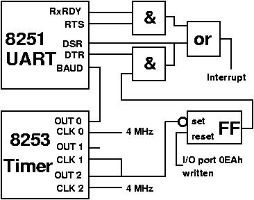

|
| |
The MIDI link that is used for communication between two synthesizers or
one synthesizer and a computer, is a so-called asynchronous serial data link. In
the computer industry, there are several serial controllers to build such a
link with. Panasonic uses the 8251 Universal Asynchronous Receiver/Transmitter, or
UART.
Unfortunately you need more than just a serial interface for a good MIDI
link. A MIDI apparatus has to be able to send MIDI data with certain timing, for
example to be able to control the tempo of the music. In the Panasonic GT that is
done by the 8253 programmable timer controller, which I will simply call the
‘timer’. Both the 8251 and 8253 are also used to control the serial connection
and timing of the official MSX RS232C interface.
Connection
The MIDI-controller in the GT is connected to the I/O ports as shown in the following table:
Connections MIDI controller to I/O ports
| address | description |
| 0E8h | UART data register |
| 0E9h | UART command/status register |
| 0EAh | timer interrupt flag off |
| 0EBh | timer-counter 0 data register |
| 0ECh | timer-counter 1 data register |
| 0EDh | timer-counter 2 data register |
| 0EFh | timer command register |
|
The UART and the timer are connected with the CPU in several ways, to guarantee optimal cooperation:
- The output of counter 0 of the timer is connected to the clock-input
of the UART to get an adjustable baud rate.
- The output of counter 2 of the timer is connected to a so-called
flip-flop. This is set when counter 2 becomes 0 and it is reset when
any value is written to the I/O register 0EAh.
- The output of the flip-flop and the DTR output of the UART are
connected to the input of an AND gate, so the output of the flip-flop
is only passed if DTR is set.
- The output of the AND gate is connected to the DSR input of the
UART. This DSR signal can be read from the status register of the
UART. As a result, the status register shows the status of counter 2.
- The RxRDY output and the RTS output of the UART are connected to
another AND gate. The RxRDY signal is thus only passed if RTS is set.
The UART uses the RxRDY to signal that MIDI data have been received.
- The outputs of the two AND gates are connected to the Interrupt input
of the CPU. Thus, the CPU receives an interrupt request if MIDI data
have been received, in which case RxRDY is set, and the CPU also
receives an interrupt when counter 2 becomes 0.
- The output of counter 2 is also connected to the input of counter 1.
- The output of counter 1 is not connected to anything, so you cannot
generate an interrupt request with counter 1. However, the value of
counter 1 can be read through its data register on 0EDh.
See figure 1 for the connections.
 |
| Figure 1:
This drawing shows how all these outputs and inputs are connected. Some details
that would make the drawing needlessly complex have been omitted.
|
|
Setting the UART mode
The UART can work in two modes: a synchronous mode and an asynchronous mode. In
fact, the 8251 is a USART; the S standing for Synchronous. However the MIDI
controller only needs asynchronous mode. That is the only one I will discuss here.
Before the UART can be used, the right mode has to be set. Before we are able to
do this, it will have to be reset. This is done by writing three zeroes and one
sixty-four to the UART through the command register at address 0E9h. By the way,
the timing is critical; between writing two values to the command register,
you will have to wait 4ms (this is about 1 tick on the counter on I/O-address
0E6h.
After the UART has been reset, the mode can be set by writing the appropriate
value to the command register. The mode value is composed as follows:
| b7 | b6 | b5 | b4 | b3 | b2 | b1 | b0 |
| S2 | S1 | EP | PEN | L2 | L1 | B2 | B1 |
- S2/S1: number of stop bits:
- 0 = invalid
- 1 = 1 stop bit
- 2 = 1.5 stop bits
- 3 = 2 stop bits
- EP: even/odd parity generation:
- 0 = odd parity
- 1 = even parity
- PEN: parity enable:
- 0 = no parity check or generation
- 1 = parity check or generation
- L2/L1: character length:
- 0 = 5 bits
- 1 = 6 bits
- 2 =7 bits
- 3 = 8 bits
- B2/B1: baud rate factor:
- 0 = synchronous mode
- 1 = 1×
- 2 = 16×
- 3 = 64×
For MIDI, 1 stop bit is needed, no parity check, eight bits character length and
a baud rate of 31.25 kHz. The baud rate is set with counter 0 of the timer and
the baud rate factor of the mode value. If, for example, counter 0 of the timer
is set to a clock frequency of 500 kHz, the baud rate factor has to be set to
16×. This leads to a binary mode value of 0100110 (decimal value 78). For a
complete initialisation of the UART, a MIDI program has to write the following
five values to the command register: 0, 0, 0, 64, 78. Between writing two values it
has to wait 4 ms.
The UART commands
After a mode has been set, all values that have to be written to the command
register are interpreted as so called command values. In fact, resetting the
UART with 0, 0, 0, 64 does in fact mean that four successive commands are written to
the UART. The first three zeroes are only needed to synchronise the UART with
the CPU, just in case the UART is in the middle of a multi byte command mode
setting. The fourth value is the actual reset command. Note that these multi byte
commands are not used in asynchronous mode, but it could be possible that a
previous (non-MIDI) program has set the UART to synchronous mode.
A UART command is composed as follows:
| b7 | b6 | b5 | b4 | b3 | b2 | b1 | b0 |
| EH | IR | RTS | ER | SBRK | RxE | DTR | TXE |
- EH: Enter hunt mode
- This bit has no function in asynchronous mode
- IR: Internal reset
- 0 = do not reset UART
- 1 = reset UART so that mode can be changed
- RTS: request to send. This bit is linked to the RTS output of the UART and in
the MSX turbo R GT is used to link the RxRDY to the interrupt request input of the CPU.
- 0 = MIDI interrupt is off
- 1 = MIDI interrupt is on
- ER: Error reset
- 0 = nothing
- 1 = reset FE, OE and PE status flags
- SRBK: Send break character
- 0 = normal operation
- 1 = pull the serial MIDI output down so a continuous stream of zero bits is sent
- RxE = Receive enable
- 0 = MIDI in is off
- 1 = MIDI in is on
- DTR: Data terminal ready. This bit is linked to the DTR output of the UART and in the MSX turbo R GT is used to mask the output of counter 2.
- 0 = counter 2 is ignored
- 1 = counter 2 can generate interrupts
- TxE = Transmit enable
- 0 = MIDI out is off
- 1 = MIDI out is on
To switch MIDI out and MIDI in both to on, the RTS, RxE and TxE bits have to be
set. If counter 2 is used as a programmable interrupt generator for timing the
recording or transmission of MIDI data, the DTR bit has to be set as well. All
other bits can remain reset.
The result is a binary command value 00100111, the decimal value 39. If no
programmable interrupt generator is necessary, the binary value 00100101
suffices (decimal 37). And if no interrupts are needed when MIDI data have been
received, the binary value 00000101 (decimal 5) is enough.
The UART Status register
The UART also has a status register that can be read through I/O port 0E9h. This
status register is composed as follows:
| b7 | b6 | b5 | b4 | b3 | b2 | b1 | b0 |
| DSR | BRK | FE | OE | PE | TxEM | RxRDY | TxRDY |
- DSR: Data set ready
- This bit is connected to the DSR input of the UART, which in the GT is connected
to the output of counter 2 of the timer.
- BRK: Break detect. A break signal is detected by checking the stop bit. If it has been 0 twice in a
row, there is a break signal. Normally, the stop bit can only become 0 if the
transmitter has set the SBRK bit of the command register. Break signals are not
used in the MIDI protocol.
- 0 = no break signal detected
- 1 = break signal detected
- FE: Framing error. A framing error is caused by a break signal or an error in the data transfer.
With MIDI, a FE is always caused by an error in the data transfer, because break
signals are not used.
- 0 = no framing error
- 1 = stop bit was 0
- OE: Overrun error
- 0 = no overrun error
- 1 = the UART has received a new character while the CPU was not ready reading the
previous character.
- PE: Parity error. Since parity is not checked in the MIDI protocol, this bit is always 0 when
transferring MIDI data.
- 0 = no parity error
- 1 = wrong parity
- TxEM: Transmitter empty. If TxEM is 1, the TxEM will become 0 as soon as the CPU has written a new value
to the data port.
- 0 = the UART is sending data
- 1 = the UART is ready sending the last byte
- RxRDY: Receiver ready. This status bit is also connected to the RxRDY output of the UART, which in the
GT, is combined with the RTS signal and connected to the interrupt input of the
CPU.
- 0 = no byte received
- 1 = byte received
- TxRDY: Transmitter ready. The TxRDY status bit is always equal to the TxEM status bit. The difference
between these two bits is that the TxEM bit is directly connected to the TxEM
output of the UART, and the TxRDY bit is masked with two other bits before it is
connected to the TxRDY output of the UART. For the MSX programmer, this
difference is irrelevant because these two UART outputs are not used in the
GT.
- 0 = the UART is not ready to send a new byte
- 1 = the UART is ready to send a new byte
Sending and receiving MIDI data
After the UART and counter 0 of the timer have been initialised, it is possible
to send MIDI data by sending it to I/O port 0E8h and to receive MIDI data by
reading I/O port 0E8h. Before writing a byte to I/O port 0E8H, the program must
wait until the TxRDY status bit is set.
Receiving MIDI data can be done by an interrupt routine which is called every time a new byte
comes in. Programmers who find interrupt routines too complex can leave the interrupt generation off by resetting the RTS bit to 0 when setting the UART command. Next, they can check
when MIDI data arrives by testing the RDY status bit.
The timer
The 8253 programmable timer exists of three independent 16-bit counters. They can
count in binary or BCD mode. The MSB and LSB of a counter can be independently
set and read, so that they can also be used as 8 bit counters. They always count
down. The mode of the counter can be set by writing a mode value byte to I/O
port 0EFh. This command value is composed as follows:
| b7 | b6 | b5 | b4 | b3 | b2 | b1 | b0 |
| SC1 | SC0 | RL1 | RL0 | M2 | M1 | M0 | BCD |
- SC1/SC0: Select counter
- 0 = select counter 0
- 1 = select counter 1
- 2 = select counter 3
- 3 = not allowed
- RL1/RL0: Read/load
- 0 = counter latch operation. See below at ‘Reading the counter’
- 1 = read/write only the LSB
- 2 = read/write only the MSB
- 3 = read/write the LSB followed by the MSB
- M2/M1/M0: Mode (The counter modes are discussed below.)
- 0 = mode 0
- 1 = mode 1
- 2,6 = mode 2
- 3,7 = mode 3
- 4 = mode 4
- 5 = mode 5
- BCD: Binary coded decimal
- 0 = counter works as 16 bits binary counter
- 1 = counter works as 4 digit BCD counter
Counter initialisation
A counter is initialised after the right number of bytes (determined by the RL
bits) is written to the counter data port. In 16-bits mode (RL1/RL0 = 3) for
example, the counter will only be initialised after two bytes have been written
to the data port.
Reading the counter
A counter can be read by reading the right number of bytes from the data port.
For a reliable result, the countdown must be paused before the counter is read.
This can be done by setting the mode of the counter.
To be able to read the counter during countdown, the timer has a special option:
there is an internal 16 bits buffer for every counter. The value of each counter
is copied to the buffer as soon as the RL1/RL0 bits of the mode register are
both 0. The M2/M1/M0 and BCD bits of the mode register are ignored in this case,
and directly after copying the counter to the internal buffer, the RL1/RL0 bits
are restored to their original state. When the data port of the counter is read
the next time, the value in the buffer is shown in stead of the value of the
counter itself.
The counter modes
Every counter can work in 6 different modes. These modes can be set with the M
bits.
- Mode 0: Interrupt on terminal count
After setting this mode, the output of the counter is low. After the counter has
been set, the output remains low and the counter starts to count down. When the
counter reaches 0, the output becomes high and stays high until a new value has
been written to the counter or the counter mode as been set again. By the way, the
counter will keep counting after reaching 0.
- Mode 1: Programmable one shot
This mode cannot be used in the GT because the so called gate input of both
counters is connected to +5V.
- Mode 2: Rate generator
With the rate generator you can make a ‘divide by N counter’. After this mode
has been set, the output of the counter becomes high and will remain high until
the counter has been set with value N. After this, the output of the counter
will become low for 1 clock pulse and the output will become high for the next
N-1 clock pulses. This process keeps repeating itself until the mode is set
again. If on the other hand the counter is set again during countdown, the
automatic count-down process will continue. The new setting is only used after
the counter has passed 0. This mode can be used for making a programmable
interrupt generator using counter 2. If the DTR bit of the UART is set, every
time counter 2 reaches 0, an interrupt signal is sent to the CPU. E.g. to make a
200 Hz interrupt generator, counter 2 can be set to mode 2 and to value 20000
(the clock frequency of the counter is 4 MHz).
- Mode 3: Square wave rate generator
By setting the counter to mode 3, you can make a square wave. If an even number
N is written to the counter, the output will be high for N/2 clock pulses and
low for N/2 clock pulses. The result is a symmetrical square wave. If an odd
number M is written to the counter, the output will be high for (M+1)/2 clock
pulses and low for (M-1)/2 clock pulses. This will result in an asymmetrical
square wave. Mode 3 is needed to set a clock frequency for the UART, among
others. E.g. to provide the UART with a 500 kHz clock, counter 0 can be set to
mode 3 and be initialised with the value 8.
- Mode 4: Software triggered strobe
After mode 4 has been set, the output of the counter goes high. When the counter
has been set, it starts counting down and if it reaches 0, the output goes low
for 1 clock pulse and the counter will stop counting.
- Mode 5: Hardware triggered strobe
This mode can not be used in the GT.
The listing
Below is an example of a MIDI program. It sends all MIDI data that are received
through to MIDI out. For this, the program first sets counter 0 to generate a
500 kHz square wave. Next, the UART is set to receive serial data and write data
at a 31.25 kHz baud rate. After this, the program will wait for new data to come
in and send it through to the MIDI out port.
I have not been able to test this program though, since I do not have enough
synthesizer equipment. Here it is:
| ML-listing:
TRMIDI.GEN |
; Example MIDI program for GT which can be run under MSX-DOS(2)
; Written by Alex Wulms for MCCM
; 26-9-1995
UARTsend: equ 0e8h ; 8251 data send
UARTrecv: equ 0e8h ; 8251 data receive
UARTcmd: equ 0e9h ; 8251 command/mode register
UARTstat: equ 0e9h ; 8251 status register
tm_int: equ 0eah ; timer interrupt flag off
timer0: equ 0ech ; 8253 counter 0 dataport
timer1: equ 0edh ; 8253 counter 1 dataport
timer2: equ 0eeh ; 8253 counter 2 dataport
tm_cmd: equ 0efh ; 8253 command
di
in a,(0aah)
and 0f0h
or 7
out (0aah),a ; select row 7 of keyboard
ld a,00010110b ; set timer 0 to
out (tm_cmd),a ; generate a square wave
ld a,8 ; set a frequency
out (tm_cmd),a ; of 200 kHz
ld hl,UARTdata
ld b,6
initUART: ld a,(hl) ; initialize UART for
out (UARTcmd),a ; MIDI data communication
inc hl
call waitUART
djnz initUART
in a,(UARTrecv) ; reset outstanding flags
main: in a,(UARTstat)
and 2 ; check RxRDY
call nz,midithru ; data waiting
in a,(0a9h) ; read keyboard
bit 2,a ; check ESC key
jr nz,main ; not pressed
xor a
out (UARTcmd),a ; set MIDI off
ret ; thats all
waitUART: in a,(0e6h) ; wait 4 micro seconds
ld c,a ; between two UART operations
waitUART2:in a,(0e6h)
sub c
jr z,waitUART2
ret
midithru: in a,(UARTrecv)
ld b,a ; B = midi IN data
midithr2: in a,(UARTstat)
and 1 ; check TxRDY
jr z,midithr2 ; UART not ready
ld a,b
out (UARTsend),a ; write to MIDI out
ret
UARTdata: db 0,0,0,64,78,5
|
|
|
More articles — including the original Dutch version of this one — can be found on Alex Wulms’ home page, see reference [1]
|